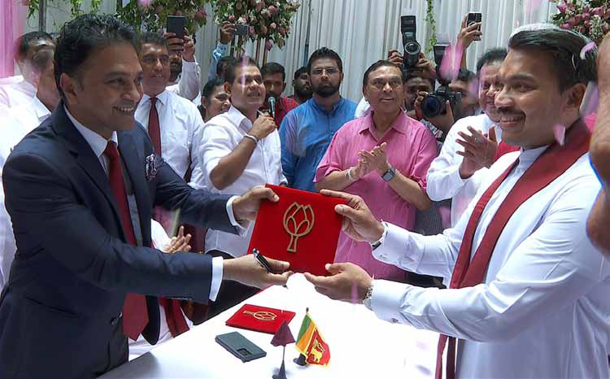
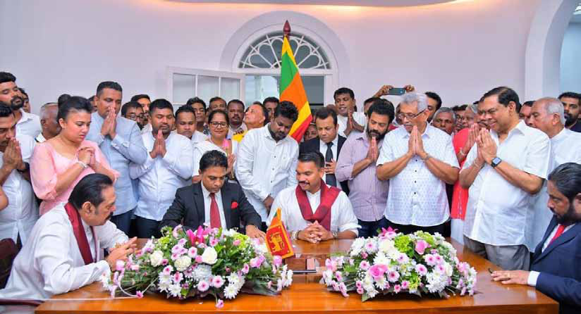
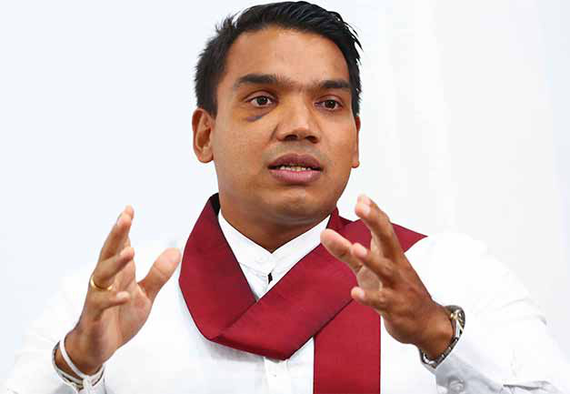
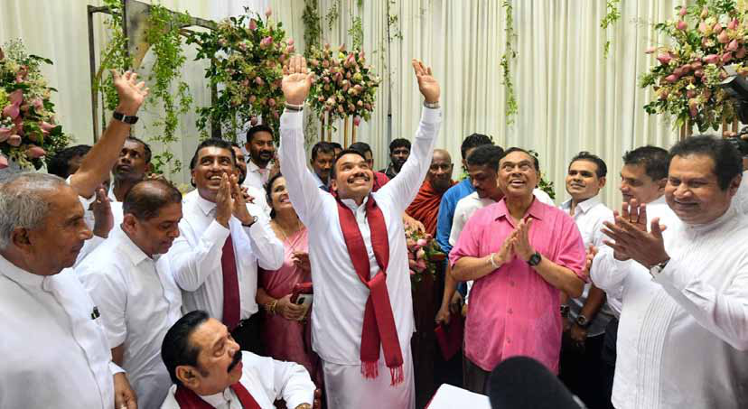

Rajapaksa Family Reunion: Namal Takes Center Stage in SLPP’s Survival Show
Rajapaksa Family Reunion: Namal Takes Center Stage in SLPP’s Survival Show
Jaffna Monitor hellojaffnamonitor@gmail.com 29 Sri Lanka I n a striking display of familial unity, the Rajapaksa brothers are rallying behind Namal Rajapaksa, the 38-year-old presidential candidate of the Sri Lanka Podujana Peramuna (SLPP). Despite swirling rumours of a rift among the siblings— complete with speculation that Basil and Gotabaya Rajapaksa were no longer on speaking terms—the senior Rajapaksas have banded together to throw their full weight behind Namal. This show of solidarity is not just a family affair; it's a calculated move to ensure that the Rajapaksa name continues to loom large in Sri Lankan politics. Rajapaksa Family Reunion: Namal Takes Center Stage in SLPP’s Survival Show BY: Our Reporter

Jaffna Monitor hellojaffnamonitor@gmail.com 30 Namal, the youngest candidate in the upcoming election, is stepping into the spotlight with the backing of his politically seasoned uncles. It's as if the brothers have dusted off their old playbook, set aside any differences, and decided to run a full-court press for the next generation. The Rajapaksas are known for their deep-rooted influence and strategic moves, and with their "win-at-any- cost" mentality, this latest manoeuvre is no different. After all, blood is bloody thicker than water. Namal is receiving strong backing from his uncles—Gotabaya and Basil Rajapaksa—each of whom, an SLPP insider told Jaffna Monitor, will play a strategic role in the campaign. Mahinda Rajapaksa, Namal's father and the most politically experienced and charismatic of the Rajapaksas, is expected to spearhead public meetings across the country. His considerable influence and popularity are anticipated to galvanize the SLPP's base and attract crowds in every constituency. However, the insider noted that due to Mahinda's advancing age and health concerns, it's uncertain how many meetings he'll actually be able to attend. While his presence is undeniably powerful, the insider hinted that the former president might not have the stamina to make as many campaign stops as the party would hope. Despite this, Mahinda's involvement—whether in person or through his enduring legacy—remains a crucial element of the campaign, one that the SLPP is banking on to energize its supporters and sway undecided voters. Gotabaya Rajapaksa, whose presidency ended abruptly in disgrace amid widespread criticism and anger among the Sinhala people, will now shift his focus to leveraging his influence within the Buddhist clergy—where he still holds significant sway, an SLPP insider told Jaffna Monitor. His role in the campaign will be carefully managed, centring on visits to Buddhist viharas and engaging with the influential Buddhist monk community rather than making high-profile public appearances. This strategy aims to avoid reigniting the negative sentiments that still linger from his tenure while securing crucial votes from Sinhala-Buddhist hardliners.

Jaffna Monitor hellojaffnamonitor@gmail.com 31 It's important to note that the Sinhala hardliners, who were also among those protesting against him and played a role in his ousting as president, don't take issue with Gotabaya's policies on Sinhala nationalism; their discontent stems from his economic missteps that plunged the country into turmoil. By keeping his public presence low- key and focusing on his connections with the clergy, the campaign hopes to retain the support of this critical voter base without stirring up the economic grievances that led to his fall from grace. An SLPP insider revealed that Basil Rajapaksa, the mastermind behind the SLPP's organizational structure, will be overseeing and coordinating the entire campaign from the party's Colombo headquarters. His role is pivotal, ensuring that every aspect of Namal's campaign is strategically executed with precision. Over the next five weeks, the campaign is set to ramp up significantly, with Namal participating in rallies across at least 140 constituencies, making his presence felt in every corner of the country. The insider emphasized that Basil's meticulous planning and strategic oversight will be crucial in navigating the complexities of this high-stakes election. From the insider's point of view, Basil is the linchpin holding the campaign together, ensuring that every move is calculated and executed flawlessly as the SLPP gears up for an intense and widespread campaign effort. The absence of former Speaker Chamal Rajapaksa from Namal's recent nomination event sparked speculation about a possible family feud. However, party insiders have clarified that Chamal's absence was due to ill health and dismissed any rumours of discord within the family. Both Chamal and his son, Shasheendra Rajapaksa, are expected to join the campaign trail as soon as health permits.

Jaffna Monitor hellojaffnamonitor@gmail.com 32 An SLPP insider revealed to Jaffna Monitor that winning isn't exactly the main course on Namal Rajapaksa's election menu. The real dish being served here is the survival of the party itself. According to the source, supporting Ranil Wickremesinghe would be like serving the SLPP its last supper. Instead, Namal was served up as the presidential candidate, even if his chances of winning are a bit undercooked. But, the insider confidently added, "Namal will still be one of the top three most-voted candidates in the election. It's not about this election," the source declared with the confidence of a weather forecaster predicting sunshine during a monsoon, "but about the elections to come. In a few years, we'll be back, and this time, we'll bring the whole buffet." Namal, they explained, has nothing to lose here—he's like a contestant on a cooking show who's just happy to be in the kitchen. By throwing his chef's hat into the ring now, he's setting himself up as the only contender for future presidential elections and the future face of the SLPP's political feast. An SLPP insider elaborated, explaining that while prominent figures within the SLPP are flocking to Ranil Wickremesinghe like moths to a flame, this unexpected migration has actually rolled out the red carpet for Namal. It's as if the party's heavyweights are clearing the dance floor, giving Namal the perfect opportunity to waltz in and build his own base of loyal supporters—people who'll cheer him on even if he's slightly offbeat. According to the source, no matter how this election plays out, Namal is in a win-win situation. He's not just solidifying his position; he's setting himself up as the future headliner, with influence that's only going to grow stronger. Think of it as Namal laying down the foundation for a house party where, by the next election, he'll be the undisputed host everyone wants an invitation from. The source concluded by saying, "Namal has nothing to lose—whatever the outcome, it's only gains for him. In fact, he's already gained a lot."
